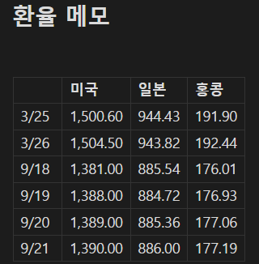
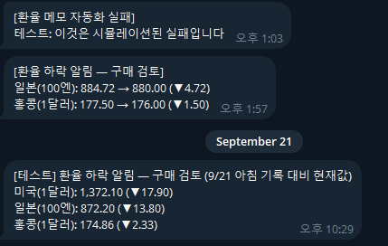

배경
업무 자동화(예: 환율 메모, 뉴스 스크랩 등)를 AI 에이전트(Hermes/OpenClaw) 없이도 만들 수 있는지 검토하다가, "자동화가 실제로 실행됐는지 어떻게 확인하나"라는 질문에서 출발했다.
결론: 자동화 자체는 물론이고, 실패 시 알림을 받는 것도 AI 에이전트 없이 순수 스크립트 + 텔레그램 봇 API만으로 충분히 가능하다.
확인 방법 3단계 (일반 원칙)
자동화가 돌았는지 확인하는 방법은 아래 세 가지로 나뉜다.
- 산출물 확인: 예정된 파일(오늘 날짜 행/파일)이 실제로 생성·갱신됐는지 확인. 가장 직접적이지만 실패 원인은 알 수 없음.
- 로그/실행 이력 확인: 작업 스케줄러(Windows) 또는 cron의 마지막 실행 시각·종료 코드 확인. 실패 원인 파악용.
- 완료 알림: 실패했을 때만 알림을 받도록 설정. 매번 확인할 필요가 없어 가장 편함.
이 문서는 3번(실패 알림)을 AI 에이전트 없이 구현하는 방법을 다룬다.
왜 AI 에이전트 없이도 되는가
텔레그램 봇 API는 단순 HTTP 요청이다. Hermes/OpenClaw 같은 에이전트가 텔레그램 메시지를 보내는 것도 결국 이 API를 호출하는 것뿐이라, 스크립트에서 직접 호출하면 에이전트 없이도 동일하게 동작한다.
- 장점: 속도·비용·안정성(모델 폐기·응답 실패 등의 문제가 없음)
- 한계: "새 기사 요약"처럼 자연어 생성이 필요한 알림은 LLM 호출이 필요함. 반면 "실패했다/성공했다" 같은 정해진 템플릿 알림은 순수 스크립트로 충분함.
알림 전용 봇 만들기
기존에 쓰던 대화형 에이전트 봇과 알림을 분리하기 위해, 알림 전용 봇을 새로 만들었다.
- 텔레그램에서
@BotFather검색 후 대화 시작 /newbot입력- 봇 이름(표시 이름) 입력
- 봇 username 입력 — 반드시
bot으로 끝나야 함 (예:lukeInfoV_bot) - 생성 완료 시 봇 토큰(
숫자:영문숫자조합형태)을 받음 — 이 토큰은 비밀번호처럼 취급해야 함
이번에 만든 봇: lukeInfoV_bot (알림 전용, 대화 응답 로직 없음)
chat_id 확인하기
봇은 사용자가 먼저 메시지를 보내야 응답을 보낼 수 있다.
- 텔레그램 앱에서 만든 봇(
@lukeInfoV_bot)을 검색해 아무 메시지나 전송 (예:hi) - PowerShell에서 아래 명령 실행:
Invoke-RestMethod "https://api.telegram.org/bot<TOKEN>/getUpdates"- 결과가 테이블로 나와서 중첩 객체가 안 보이면, 아래처럼 직접 경로를 지정해서 뽑는다:
(Invoke-RestMethod "https://api.telegram.org/bot<TOKEN>/getUpdates").result | ForEach-Object { $_.message.chat.id }주의할 점: getUpdates 결과에는 봇 자신의 정보(from.id)와 사용자 정보(chat.id)가 섞여 있다. 토큰의 콜론(:) 앞부분 숫자가 봇 자신의 ID이므로, chat_id로 착각해 그 값을 넣으면 "bot can't send messages to the bot" 오류가 난다. 반드시 message.chat.id 경로의 값을 사용해야 한다.
테스트 메시지 보내기
Invoke-RestMethod "https://api.telegram.org/bot<TOKEN>/sendMessage?chat_id=<CHAT_ID>&text=테스트 알림입니다"!접두사는 Claude Code 대화창 안에서만 쓰는 표기이며, 별도 PowerShell 창에서는 붙이지 않는다.- Windows Git Bash(
curl)로 한글 텍스트를 보내면"strings must be encoded in UTF-8"오류가 날 수 있다 (터미널 로케일 문제). Python의urllib.parse.urlencode로 인코딩하면 한글이 정상적으로 전송된다.
실제 자동화에 통합한 예시: 환율 메모
기존 exchange_rate_to_obsidian.py(환율 메모 자동 갱신 스크립트)에 실패 알림 기능을 추가했다.

환율 메모에 날짜별로 정리된 미국·일본·홍콩 환율- 봇 토큰·chat_id는 스크립트와 같은 폴더의
notify_bot_config.json에 별도 저장 (옵시디언 볼트 밖 → OneDrive 동기화 대상 아님, 민감정보를 노트에 남기지 않기 위함) main()실행 중 예외가 발생하면(API 3회 재시도 실패, 파일 없음 등)notify_failure()가 텔레그램으로 실패 내용을 보내고, 원래 예외도 그대로 발생시켜 cron 로그에도 실패가 정상 기록되게 함- 성공 시에는 알림을 보내지 않음 (실패 시에만 알림 — 매번 성공 알림을 받으면 금방 무시하게 되므로) → 2026-09-21 변경: 매일 06:30 환율 안내를 한 번 보내도록 바뀜. 아래 "9/21 문의" 섹션 참고
def notify_failure(error: Exception) -> None:
"""실패 시 텔레그램 알림. 알림 자체가 실패해도 원래 에러를 가리지 않도록 예외를 삼킨다."""
if not NOTIFY_CONFIG.exists():
return
try:
config = json.loads(NOTIFY_CONFIG.read_text(encoding="utf-8"))
url = f"https://api.telegram.org/bot{config['bot_token']}/sendMessage"
data = urllib.parse.urlencode(
{"chat_id": config["chat_id"], "text": f"[환율 메모 자동화 실패]\n{error}"}
).encode("utf-8")
urllib.request.urlopen(urllib.request.Request(url, data=data), timeout=10)
except Exception:
pass
if __name__ == "__main__":
try:
main()
except Exception as exc:
notify_failure(exc)
raise확장: 환율 하락 시 "구매 검토" 알림
실패 알림뿐 아니라, 성공 경로에서도 조건부 알림을 붙일 수 있다. 환율이 떨어지면 구매를 검토해야 하므로, 오늘 값을 저장하기 직전에 직전 기록과 비교해 하락 여부를 판단하도록 확장했다.

- 비교 대상: 세 통화(미국·일본·홍콩) 모두
- 비교 기준: 전날(직전 기록) 대비 하락 여부 (목표 환율 같은 고정 기준이 아님)
- 같은 날 재실행돼도 오늘 행과 비교하지 않도록, 오늘 날짜와 같은 행은 건너뛰고 그 이전 행을 "직전 기록"으로 삼음
- 하나라도 하락하면
[환율 하락 알림 — 구매 검토]메시지를 하락 폭과 함께 발송, 하락이 없으면 알림 없음 (→ 9/21에 "하락이 없어도 매일 안내"로 변경, 아래 섹션 참고)
def find_drops(previous, rates):
drops = {}
for currency in rates:
prev_value = parse_rate(previous[currency])
new_value = parse_rate(rates[currency])
if new_value < prev_value:
drops[currency] = (prev_value, new_value)
return drops
def notify_drops(drops):
lines = [
f"{CURRENCY_LABELS[c]}: {prev:,.2f} → {new:,.2f} (▼{prev - new:,.2f})"
for c, (prev, new) in drops.items()
]
notify_telegram("[환율 하락 알림 — 구매 검토]\n" + "\n".join(lines))이 패턴(실패 시 알림 + 성공 경로에서 조건 충족 시 알림)은 임계값이 있는 다른 자동화(예: 특정 논문 카테고리 신규 등록, 특정 키워드 뉴스 등장)에도 그대로 적용할 수 있다.
9/21 문의: "21일 환율 안내가 안 왔다" 점검과 개선 (2026-09-21)
증상
옵시디언 환율 메모 정리와 텔레그램 구매 안내를 요청해 두었는데, 9/21에는 진행이 안 된 것처럼 보였다.
점검 순서 (위 "확인 방법 3단계"를 실제로 적용)
- 산출물:
5. Memo/환율 메모.md에 9/21 행이 06:30:31에 정상 추가돼 있었다 (미국 1,390.00 / 일본 886.00 / 홍콩 177.19). - 실행 이력: Hermes cron 작업
72360a890c52가last_status: ok, 오류 없음. 작업별 출력 파일(cron/output/<작업ID>/날짜_시각.md)에도 실행 결과가 남아 있었다. - 알림 조건: 스크립트는 "전일 대비 하락"일 때만 알림을 보낸다. 9/20 → 9/21은 세 통화 모두 소폭 상승이라 알림이 나가지 않은 것이 설계대로의 동작이었다.
알게 된 점
- "안 왔다"가 곧 "실패했다"는 아니다. 조건부 알림은 조건 미충족 시에도 조용하므로, 알림이 없는 것과 자동화가 안 돈 것을 구분하려면 산출물과 실행 이력을 봐야 한다.
- 하루 한 번(06:30) 기록하는 구조라 낮 시간대 하락은 알림에 잡히지 않는다. 실제로 점검한 밤 시간에는 미국 1,371.70 등 아침보다 약 1.3% 낮았다.
- 전일 대비 기준은 "값이 계속 오르는 구간"에서는 알림이 오지 않는다.
개선: 매일 06:30에 한 번 안내
"하락이 없어도 하루 한 번은 받고 싶다"는 요구에 따라, 조건부 알림을 일일 안내 + 하락 시 제목 강조로 바꿨다.
- 06:30 실행 시 하루 한 번, 세 통화 환율과 직전 기록 대비 등락(▲/▼)을 발송
- 하나라도 하락하면 제목
[환율 하락 알림 — 구매 검토], 아니면[환율 안내] - 하루 중 추가 조회·알림은 하지 않음 (여러 번 조회하는 안은 채택하지 않음)
- 실패 알림은 그대로 유지
- 수정 전 원본은
exchange_rate_to_obsidian.py.bak으로 백업
def notify_daily(date_label, rates, previous, drops):
title = (
f"[환율 하락 알림 — 구매 검토] {date_label}"
if drops
else f"[환율 안내] {date_label}"
)
lines = []
for currency, value in rates.items():
line = f"{CURRENCY_LABELS[currency]}: {parse_rate(value):,.2f}"
if previous is not None:
diff = parse_rate(value) - parse_rate(previous[currency])
if diff < 0:
line += f" (▼{-diff:,.2f})"
elif diff > 0:
line += f" (▲{diff:,.2f})"
else:
line += " (변동 없음)"
lines.append(line)
notify_telegram(title + "\n" + "\n".join(lines))테스트와 시행착오
- 텔레그램 테스트 메시지를 1회 발송해 도착을 확인했다 (사용자 확인 완료). 옵시디언 메모에는 아무것도 기록하지 않는 발송 전용 테스트였다.
- 수정 중 파이썬 문자열의
\n이스케이프가 파일에 실제 줄바꿈으로 저장돼SyntaxError: unterminated string literal이 발생했다. 반영 후에는 반드시 문법 검사(ast.parse)를 먼저 하고 적용한다. - Git Bash에서 한글·특수문자를
print하면cp949인코딩 오류가 난다.PYTHONIOENCODING=utf-8을 지정해서 확인한다. 스크립트 오류가 아니라 콘솔 문제다. - 알림 함수(
notify_telegram)는 예외를 삼키도록 설계돼 있어, 테스트 발송에서는 함수를 직접 호출하지 않고 응답의ok값을 확인해야 실제 성공 여부를 알 수 있다.
후속 확인
- 9/22 06:30 자동 알림이 도착하는지 확인한다. 안 오면
72360a890c52의 실행 기록부터 본다.
다른 자동화에 재사용하기
lukeInfoV_bot은 대화 기능이 없는 알림 전용 봇이므로, 같은 방식(설정 파일 분리 + 예외 발생 시 알림)을 다른 자동화(교수노조 뉴스 스크랩, 논문 요약 등)에도 그대로 적용할 수 있다. 자동화별로 알림 문구만 바꾸면 된다.
참고: 관련 자동화 문서
- 환율 메모 자동화 상세 내용은
AGENTS.md의 "Obsidian 환율 메모 자동 갱신" 섹션 참고